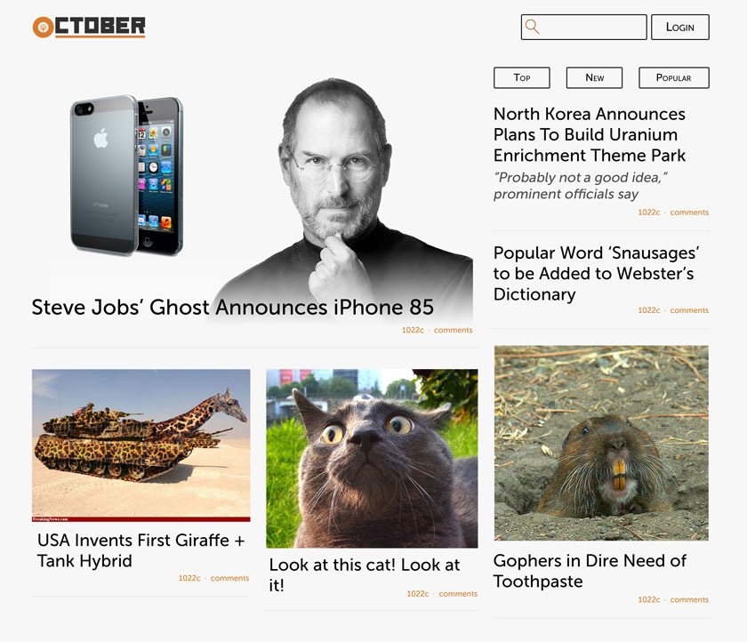
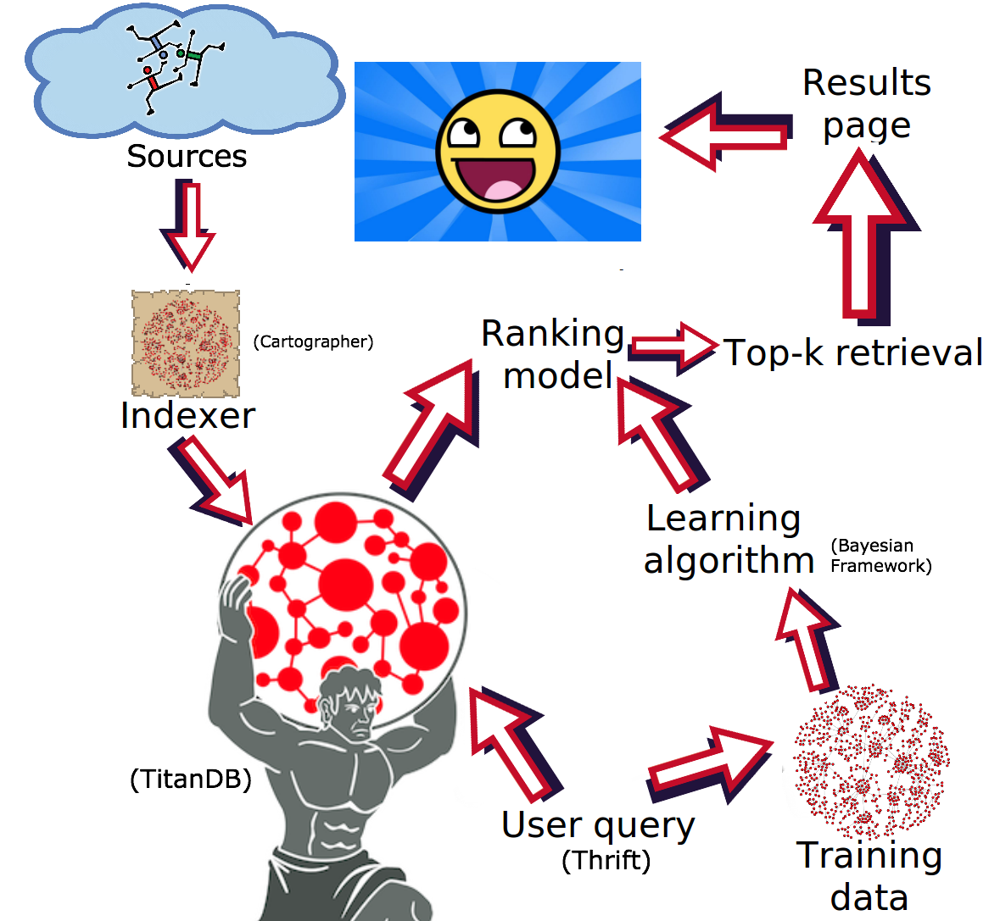

Essentially the approach works as follows:
October predicts the user's authentic news interests regardless of the news trend, using the user's clicks in each past time period
Predictions made with data in a series of past time periods are combined to gain an accurate prediction of the user's authentic news interests
October predicts the user's current interests by combining their authentic news interests and the current news trend in the cluster the user belongs to within the property graph.
Methods:

Other consideration: All requests are cached heavily using memcached